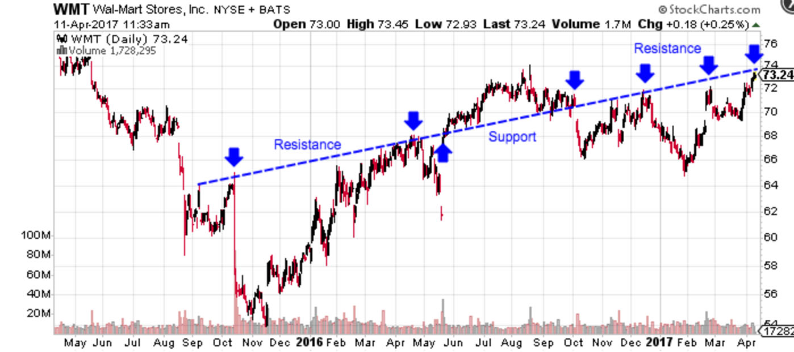

Support And Resistance
Support and resistance are the next major concept after understanding the concept of a trend. You’ll often hear technical analysts talk about the ongoing battle between bulls and bears, or the struggle between buyers (demand) and sellers (supply). The proverbial ‘battle lines’ can be defined as the support and resistance levels where the most trading occurs. Support levels are where demand is perceived to be strong enough to prevent the price from falling further, while resistance levels are prices where selling is thought to be strong enough to prevent prices from rising higher.
As you can see in Figure 6, the price channel from the previous section, the bottom trendline represents a key support level while the upper trendline represents a key resistance level. The arrows near the top and bottom trendlines show the levels where the price seldom surpassed until it broke out higher. After the breakout, the upper trendline transitioned from a resistance level to a support level for the new trend.
Why Does This Happen?
Support and resistance levels are psychologically-important levels where a lot of buyers and/or sellers are willing to trade the stock. When the trendlines are broken, the market psychology shifts and new levels of support and resistance are established.
Round Numbers
Round numbers tend to be important support and resistance levels due to their psychological importance. For instance, many investors watch the Dow Jones Industrial Average’s 20,000 or other levels as key milestones. Traders watch round numbers like 10, 20, 35, 50, 100, and 1,000 since they often represent important turning points where traders will make buy or sell decisions
Buyers will often purchase large amounts of stock once the price starts to fall toward a major round number, which makes it more difficult for shares to fall below that level. On the other hand, sellers start to sell off a stock as it moves toward a round number peak, making it difficult to move past the upper level. This increased buying and selling pressure makes them important points of support and resistance and, in many cases, major psychological points as well.
Role Reversal
A trendline doesn’t cease to be an important area of support or resistance when it’s broken; rather, it’s role is simply reversed. If a price breaks out from a resistance trendline, the trendline becomes a support level moving forward. The only catch is that the reversal needs to be a true reversal rather than a false breakout or breakdown, which generally means that it’s accompanied by significant volume and a price spike.
Importance of Support and Resistance
Support and resistance levels are a critical part of trend analysis because it can be used to make specific trading decisions and identify when a trend is about to reverse. For example, a trader might identify an upcoming support level and decide to start buying the stock as it approaches knowing that it will likely rebound higher. These levels both test and confirm trends and should be closely monitored by anyone using technical analysis. As long as the price remains between these two levels, the trend is likely to continue in the prevailing direction
However, a break beyond support or resistance does not always indicate a reversal. For example, a breakout higher may be the start of a faster bullish trend and vice versa for a breakdown below trendline support. There are also instance of ‘false breakouts’ when a price may breakout higher on low volume and then fall back into a price channel.
Traders should be aware of support and resistance levels and avoid placing orders at these major points since they’re usually characterized by a lot of volatility. If you feel confident about making a trade near these levels, it’s important to avoid placing orders directly at the level since they are rarely reached. This is because the price never actually reaches the whole number, but rather, flirts with the levels before rebounding. Traders may also place stops or short selling orders around these levels to capitalize on a breakdown or breakout.